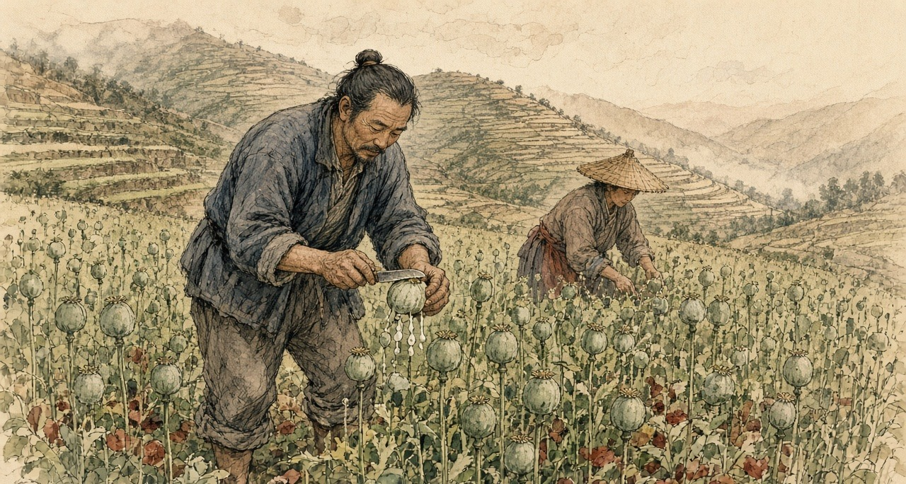
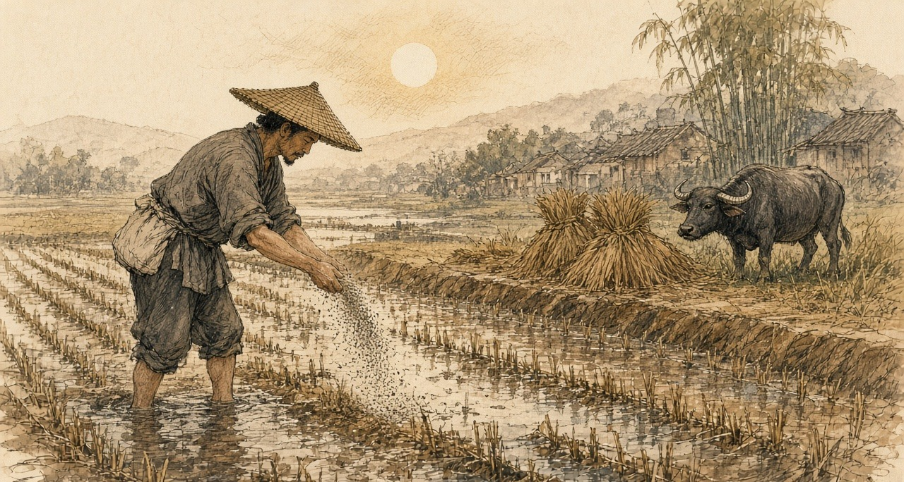
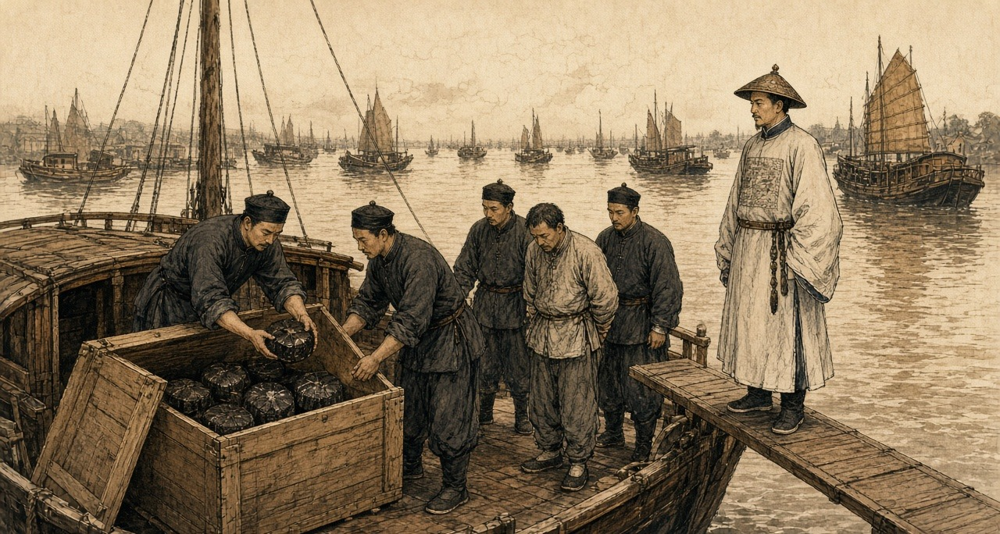
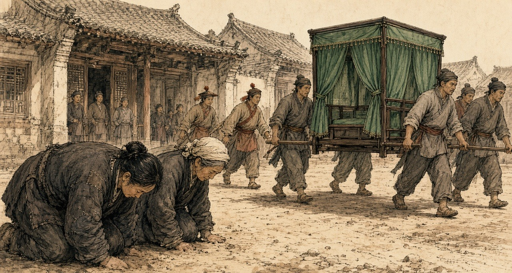
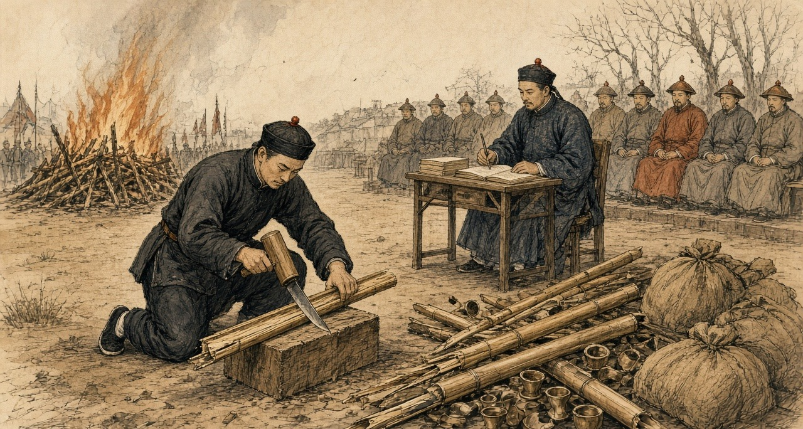
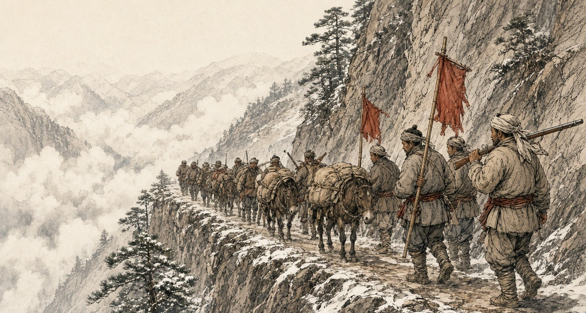

Chapter 3
Poppies Inland, 1839
Yunnan, Sichuan, Hubei, and Peking, 1831 to 1848
In the summer of 1831 the governor-general of Yunnan and Guizhou, the scholar 阮元 Ruǎn Yuán, sent the Daoguang Emperor his rules for stopping the poppy in the Southwest. The emperor's reply of 3 August, kept in the Veritable Records, repeats what Ruan had told him. Along Yunnan's frontier the 夷民, the non-Han peoples of the border, had long grown the poppy, collected the juice of the flower, and boiled it into a paste they called 芙蓉 fúróng, the lotus, and sold it as opium. People of the interior grew it too, saying they wanted the seed for pressing oil. Ruan explained why. "费工少而获利多": it took little labor and paid a great deal. The province was all deep mountains and remote valleys, and the habit was old.
Ruan proposed two inspections a year. In winter, when the poppy came up out of the ground, the local official and an officer of the garrison would walk the fields and hoe the plants out. In late spring, when it flowered and set its buds, they would walk them again. Clerks and runners of proven honesty would watch the passes and the tax stations for carriers.
The emperor answered the plan point by point. The valleys were too many, he wrote, and to trust the growing households to dig out their own plants "是必不可信之事," was a thing that could never be believed. Then the runners. "试思胥役之中。焉有诚妥可信者": think it over, among clerks and runners, where is there one honest and trustworthy? Add more of them and you add one more abuse. "所议皆不过纸上空谈。于事何济": everything proposed is empty talk on paper, and what use is that to the matter? He ordered the officials to inspect without fixed dates, to arrive when no one expected them, and to report at the end of every year. If poppy they had not found turned up later in some other case, they would be impeached.
For the border domains he left the work to the 土司 tǔsī, the hereditary native chiefs who governed them for the throne. Each winter the chief was to inspect in person. Any plot grown in secret, his headmen and militia were to pull up, and the grower was to be put in the cangue according to the statute. The field went to the chief, to be worked by his militiamen as militia land.
The same summer the emperor approved rules for Hunan, where poppy growers were to be sent into military exile and their land confiscated. From Canton the viceroy reported poppy only in the prefecture of Chaozhou, and the emperor answered that he doubted it stopped there. In Guangdong the field would be forfeit and the grower punished as an opium dealer, and the ward headmen, village elders, and lineage heads who had kept quiet would be cangued or beaten. The governor-general of Sichuan, 鄂山 È Shān, reported poppy still grown around Huili and Pingwu, where the province met the non-Han country. In Hunan and Guangdong the officials were to sign a sealed bond every year that their districts grew none.
* * *
A valley near Mengzi, southern Yunnan, the winter of 1838 to the spring of 1839
That field, my grandfather left-behind. Beans, wheat, cold-season plant, year-year plant. Beans carry-go Mengzi street on-top sell, wheat keep-give us ourselves eat. Good year, the beans hand-over-already grain-tax, still remain-get-down little-over. Bad year, not-enough.
Five years already, plant poppy. My wife's-brother first plant, across-ditch that house follow-hold plant, follow-hold is me. Same one field, same one water, same one winter. The seed tiny-very, one whole year's seed, hold at one bowl inside. Sow thin-little, do-not let birds peck-already. The rest, the plant itself grow.
Winter, the green-shoots come-up-already. Low-low, grey-green grey-green, leaves like grow-bad-already cabbage. This winter, provincial-city send-down proclamation come, stamp-up big red seal, the headman at temple door-mouth read-out. Plant poppy, boil paste, open smoke-house, carry-out province sell, all-all must seize must punish, no favour. He read-finish, fold-up come, stuff-return sleeve-tube inside, return-home go-already.
Spring, open-flower. Whole valley, white, also have red, sun-underneath hurt-eyes-very. After-that, the petals drop-already, the head at stalk on-top stand-up come, green, hard, hen's-egg so big. This time, the work start-already.
Prick the head. One small blade, stroke few lines, shallow-shallow, only break skin. The white-juice come-out, one bead, one line, slow-slow, hang at that-place turn-into brown-colour. After-that, use knife-edge scrape-enter bowl inside. Every one head, every one plant, whole field, bend-up waist-back, the back, the neck, my woman at next-door that row. Fingers on-top the juice turn-black-already, sticky-hand-very, wash also wash-not-off.

After-that, is enter-pot. Boil, strain, again boil-dry, until boil-into paste, both thick and dark. That smell, both sweet and rotten mix-together, bore-enter earth-walls inside, bore-enter quilts inside. Left-right neighbours anything all not say. Their houses inside also is same smell.
Sichuan merchant-man come take. Give silver. Compare-to plant rice ten-times more, people say. Ten-times, I not know. Compare-to beans more, much more. This year grain-tax hand-over-clear-already, still have over.
Towns inside the paste cheap, compare-to anywhere all cheap, the Sichuan man say. Mengzi street on-top, the smoke-houses big-doors wide-open. Yamen inside the people go, clerks, runners, officials' relatives and servants. Book-reading men, shopkeepers, garrison-camp inside the soldiers, ordinary people. Ten men inside, have five-six, people say.
My wife's-brother now also eat-up-already. Once reach evening, the lamp not-yet light, his that hand then start shake, the eyes look-reach other-place go, the person sit at table-side, the soul already not at table-side. His woman run-come find my woman, cry. Their house's buy-rice money, enter-already his that pipe. Himself boil-out the paste, enter-already his own pipe. Himself grow, himself boil, himself smoke, still owe-debt.
Summer, provincial-city again pass-down news come. Peking come new law. Whoever grow poppy, gather juice, make paste go sell, the chief-offender, strangle-die. Not is at-once strangle, wait autumn-assizes pass-after. The helpers, banish-go fever-country at far-frontier. Give one year and half time stop-completely.
That night, sleep-not-able. Lie at bed on-top, pitch-dark open-hold eyes. One rope loop at neck on-top, I think-up one rope loop at neck on-top, the knot at ear underneath. Climb-up come, walk-out go, stand at field-edge. The stalks, now dry-already, wind blow-pass, rattle-rattle sound. My own two hands, finger-creases inside still is black, no-need look all feel-get-to. Stand-already very long-time. After-that, walk-return house, at my woman beside lie-down, she also wake-hold at-there, we two, one word all have-not say.
Next winter, the seed still is enter-ground again, with across-ditch that house same-like.
* * *
Peking, 1836 to 1838
The court argued over the poppy at home before it argued over the ships at sea. On 10 June 1836 the vice-president of the Court of Sacrificial Worship, 许乃济 Xǔ Nǎijì, who had served in Guangdong, proposed taxing foreign opium as a medicine and, on a separate slip, letting Chinese farmers grow their own. Opium came from the juice pricked out of the poppy as it set its buds, he wrote, boiled down. Fujian, Guangdong, eastern Zhejiang, and Yunnan had all grown it, until the censors had it banned, and since then nobody in the interior dared, and the foreigners kept all the profit. Native opium was cheap and weak, he wrote, did a man little harm, and was easy to give up. "今若宽内地民人栽种罂粟之禁，则烟性平淡，既无大害，且内地之种日多，夷人之利日减，迨至无利可牟，外洋之来者自不禁而绝." If the ban on the people of the interior planting the poppy were relaxed, the smoke would be mild and do no great harm, home growing would increase day by day, the foreigners' profit would shrink day by day, and when there was no profit left to seek, the foreign supply would stop without being banned.
He knew the danger to the grain, and answered it from Guangdong. There the poppy went in after the late rice was cut in the ninth month, flowered and fruited by the second or third, and once the juice was taken the early rice went in, so the land lost nothing and the farmer gained a great deal. The officials at Canton, answering the emperor, suggested allowing it on hilltops and field corners too broken to be farmed in proper plots, and nowhere on good fields.

Xu argued for the people as he saw them. Only the stupid and lowly with no office would be left free to buy and smoke, he wrote; officials, scholars, and soldiers would still be forbidden. Did the habit shorten lives? Not always, and "今海内生齿日众，断无减耗户口之虞": the empire's people were growing more numerous by the day, and there was no danger at all of the population being reduced. That autumn two officials answered him. One was the supervising censor 许球 Xǔ Qiú. The other was the sub-chancellor of the Grand Secretariat 朱嶟 Zhū Zūn, a Yunnan man from Tonghai, who would not have the poppy ban in the interior loosened and would not have the law punish officers and soldiers while it let the common people buy and smoke. "民贫尚可变富，民弱不可救药," he wrote: a people grown poor can still grow rich again, but a people grown weak has no medicine that will save it.
Huang Juezi's memorial of 1838, with its year of grace and death for the smokers, won the argument at court. On 28 October 1838 Xu Naiji was demoted to the sixth rank and retired for having recklessly asked for the ban to be relaxed.
On 20 December 1838 the emperor wrote to the governor-general of Yunnan and Guizhou, 伊里布 Yīlǐbù, and the governor of Yunnan, 颜伯焘 Yán Bótāo, about a memorial on their province. In the deep mountains and remote valleys, it said, the poppy was grown and its juice boiled into smoke, "其利十倍于种稻," the profit ten times that of growing rice. In the yamens, from officials' relatives, private secretaries, and servants down to clerks and runners, and in the towns, among students, merchants, soldiers, and ordinary people, "吸烟者十居五六," smokers were five or six in ten. Dens opened in plain view. The paste sold cheaper than in any other province and was now being carried out of it for the profit. The opium that came by sea had to be dealt with strictly, the emperor wrote, and what grew at home had to be cut out.
* * *
Hanyang and Hankou, the summer of 1838
Hankou sat where the Han River runs into the Yangzi, across the water from the provincial capital at Wuchang, a town of markets and warehouses. In the summer of 1838 the governor-general of Hubei and Hunan, 林则徐 Lín Zéxú, did not wait for the court to settle the new penalties. He and the two governors set up bureaus in the provincial city and at Hankou to take in pipes, bowls, implements, and leftover opium, and he paid out of his own allowance for a thousand courses of pills to break the craving, for men who handed in their pipes and truly meant to stop.
The magistrate of Hanyang, 郭觐辰 Guō Jìnchén, went down to the boats. In the cargo boxes of a dealer named 朱运升 Zhū Yùnshēng his men found more than 1,200 taels of raw opium and more than 800 of prepared paste hidden among the goods. In the warehouse of Qiu Dixiang they took two more dealers. Two others had already gone home to Guangdong, and in the leather trunk of one and the wooden chest of the other the searchers found 2,070 and 980 taels. In another warehouse they took two more, and in the double bottom of a bed belonging to a man who had run, 850 taels. Three dealers walked into the prefecture and county offices and gave theirs up. In all, more than twelve thousand taels.

By the end of the sixth month the bureaus had 1,264 pipes. Lin's officials checked them one by one, split each with a knife, and burned them. Pipes with paste still caked inside were soaked with tung oil and burned again until nothing was left, and the ash was thrown into the middle of the river. The carved and ornamented pipes and bowls, Lin wrote, were too many to list.
He had been asking the merchants about trade, at Hankou and before that in the Nanhao quarter of Suzhou. They told him that goods which twenty or thirty years before had done ten thousand taels of business now did half that. He asked where the other half had gone. "一言以蔽之，曰鸦片烟而已矣." In a word, opium.
He did the sum for the emperor. A poor man in a fair year could live on four or five hundredths of a tael of silver a day, and on a tenth of a tael he lived comfortably. A smoker spent at least a tenth of a tael a day on top of food and clothes, thirty-six taels a year. If only one in a hundred people smoked, the drain was more than a hundred million taels a year, and far more than one in a hundred smoked. Smokers called their friends in, he wrote, and took pride in drawing others into the habit.
The dealers, he reported, had heard there might be a death penalty, "莫不魄悸魂惊," and every one of them was shaken to the soul. Many had already fled. He wanted the smokers punished as hard as the sellers, and quoted the proverb: in a market of men whose feet have been cut off, nobody sells shoes, and beside the monks' quarters nobody sells combs.
He named who protected the trade. In the yamens, he wrote, among private secretaries, officials' relatives, personal servants, clerks, and runners, "嗜鸦片者十之八九," eight or nine in ten were addicted, and all of them were in a position to shield the sellers. The statute had long prescribed strangulation for keeping an opium den. "而历年未闻绞过一人，办过一案": yet in all those years no one had heard of a single man strangled, or a single case tried.
* * *
A roadside in Wuchang, the summer of 1838
The chair along the road come-pass, front the runners all-way call-clear road, I right at road-side the dust inside kneel-down go, forehead press-hold ground, stay. Our lane inside Old Mrs Wang at my beside, also kneel-hold. Further-along, still have other-people. Have-no anyone tell us come. We ourselves come.
Twelve years already, his craving. River-side cloth-shop inside one clerk, a good hand, can write. Trade turn-bad-already, the shop cut his pay, after-that have one evening, a friend take him along go eat-smoke, say for company. From that after, evening-evening all go. The friend again bring other friends come. After-that, the shop then let him go.
One day's eating, our house, five mouths, never pass few coppers. His that pipe, every day, eat-away more-than all of us. The pawnshop, my wedding hairpins, winter quilt, his good long-gown. Toward my sister borrow, toward his cousin borrow. Year-year New Year, the debts call-in, people at door-mouth, and him lie at bed on-top, face turn-toward wall.
After-that, the notices paste-out-already. A death-law come-hold. The yamen give-out medicine-pills. I myself pull-hold his sleeve take him go the bureau inside, him hand-inside hold-hold use cloth wrap-up the pipe, hand-over go, they then give him the paper packets.
After-that, is the days after.
His face shrink-already. The layer skin pull-tight at bones on-top, the lips draw-back off the teeth, the teeth all-time show at outside, even sleep-hold also show. Water stream-down from the eyes. Cold, cold over whole body at summer-heat inside, shake under every cover we have left, and we have-not remain many. Ache, every part of him. The bowels, flow-water, one night many times, the stink of it at that one room, him too weak stand-up-not-able, me clean him like a baby so. Have-no strength even lift the head. And always beg-hold. One pipe, only one. He call me my childhood small-name, only his mother use that-one.
Druggist say ginseng help. Druggist's price for ginseng, Korean, foreign, all of it, since the notices come-out, up and up, several times what it was. Whole city the people all buy-hold. I sell-already my last good jacket for one packet of it.
After-that, have one morning, he eat-down rice. Half a bowl. Pass-already few days, he sit at doorway inside in the sun. Now he go the docks for work, any work, come-home tired and sleep at night. His face, fill-out a-little.
What I twelve years do-not-able, what his own father do-not-able, the death-law do-already.
So I kneel. Dust at my mouth inside. The chair go-by, I hear the poles creak, I have-not look-up. I toward the ground say, my husband, the habit, break-already, he is get-stronger-hold. Say-already again. Whether anybody hear-reached, I not know.

Lin wrote to the emperor that old people and women were kneeling at the roadside in Hubei and knocking their heads on the ground in thanks, saying their husbands and sons had long been sick with the craving and now, by the medicine, had broken it, and their bodies were growing stronger. "是其父子家人平日所不能断者，皆恃国法有以断之": what fathers, sons, and families could not break on their own, they relied on the law of the state to break for them.
* * *
The parade ground at Wuchang, the tenth day of the ninth month, 1838
Morning. The parade-ground flat and grey, the dust pack-hard by the soldiers' feet. Governor-General himself at-there, and the Governor. We runners at the tables.
Pipes, one mountain of them. Sacks and bundles tie-hold with string, from all-over the province. Plain pipes black with years. Pipes carve and fit so fine, so many kinds, no person count-clear-able. Bowls in heaps. All the little tools. The clerk call the count, I hand, the other-one write. At the end, one-thousand seven-hundred fifty-four, pipes.
My job, the knife. Lay the pipe at the block on-top, set the blade along the stem, hit the back of the blade with the mallet. Crack. Split-open, two halves. Inside, black. Old oil, thick, shining, all down the bore. That is how you tell an old pipe from a new one, the clerk say, a new one is clean inside. These, none clean.

And the smell come-up out of the wood when it split.
My hands, the first hour, steady. After-that, not. Every crack it come-up again, enter the nose inside, enter the throat back, and the stomach turn-over and the mouth fill with water. Spit, wipe the mouth at the sleeve on-top, next pipe. Since the summer I have-not go to the place behind the dyer's. Since the summer, fifty-odd days. The eyes stream-water, the cold at the bones inside at the heat, the aching, the bowels, that is pass-already now, almost pass-already. And now this, a whole morning of it, the whole parade-ground.
The runner next to me, same thing, I see-out-can. Lips wet. Neither of us look at the other.
After-that, the scales. Raw opium, paste, weigh-out at the great-men in-front, the clerk call-hold it. Sixteen-thousand seven-hundred sixty-eight taels. The Jiangxia lot, throw-enter the middle of the river. Gone, all that money, under the brown water. The Hanyang lot, seal-up for the provincial treasury.
The pipes, smash-broken, onto the fire. Oil at inside, they go-up fast, spit-hold, and the smoke is that smoke, sweet and heavy, roll-cross the ground. I keep my eyes at the fire on-top, and pinch the inside of my wrist with my nails until the skin break, and keep pinch-hold.
The new law, people say, will be death for smoking. At the yamen inside everybody know who smoke. Eight of ten, nine of ten. Our own Governor-General write-already it to the Emperor, the clerk say. If it come, who arrest whom.
End of the day, my hands black to the wrist. Wash-already them at the bank. The smell at them on-top still, walk-return home. At the dark inside, at the alley by the dyer's, I stop-already. Stand at-there. My feet know the way. After-that, walk-on.
That winter the emperor called Lin to Peking and sent him on to Canton as imperial commissioner.
* * *
The roads between Yunnan and Sichuan, 1839 to January 1841
In 1839 the censor 陆应谷 Lù Yìnggǔ, himself from Mengzi, reported that the poppy in Yunnan was no longer a matter of a few border valleys. In Fumin, Chenggong, and Luquan, counties just outside the provincial capital, people were planting it in secret. And in the wide districts toward the frontier, Mengzi, Guangnan, Kaihua, Jingdong, Zhaozhou, Menghua, "昔种豆麦之田今成罂粟之地": the fields that once grew beans and wheat had become poppy land.
The capital added up the provincial reports. Across 1838 and 1839, the archives of the campaign record, the provinces outside Guangdong seized 588,179 taels of opium and paste and 39,468 pipes and implements, and took 4,111 dealers and smokers. In March 1839 the Sichuan governor-general 宝兴 Bǎoxīng reported 32,630 taels, more than 3,340 implements, and 33 cases. The poppy uprooted in those two years came to something over 230 mu, under forty acres, and Zhejiang alone reported that much. Yilibu reported to the throne that the poppy in Yunnan had been dug out completely.
The regulations of June 1839 reached the provinces that summer: strangulation after the assizes for the chief offenders who grew the poppy and made and sold the paste, exile to the malarial far frontier for their accomplices, eighteen months for the country to comply.
On 22 January 1841, the last day of the twentieth year of Daoguang, with a British fleet already on the coast, the emperor answered a memorial from the border. Opium bands from Yongchang in western Yunnan, it said, were moving in parties of several hundred men at a time, carrying guns and cannon. Each band carried red flags, and on the flags was written:
将本求利，舍命取财
Jiāng běn qiú lì, shě mìng qǔ cái
Put up the capital, seek the profit. Stake your life, take the wealth.
They traveled freely between Shunqing and Ningyuan in Sichuan. The people there grew poppy and boiled it into raw opium under the new name of 芙蓉膏, lotus paste, and went about selling it in gangs. The authorities at Huili had caught one opium criminal, who confessed that in Yunnan he had resisted arrest and killed soldiers, and the case had been closed with a muddled verdict. The censor 杜彦士 Dù Yànshì, writing on the same border that month, reported that the people there lived mainly by growing poppy and that half the sellers were Sichuan men.

The emperor asked how this could be. Yilibu had reported the Yunnan poppy destroyed, cleared completely. How then was lotus paste still sold? The new governor-general and governor were to make their subordinates investigate and arrest in earnest and to uproot every plant, "不准稍留根株," not the smallest root left behind; and the Sichuan governor-general was to seize any opium bandit who crossed into his province, "毋许姑息养奸," with no indulgence that would feed the evil.
Lin had been dismissed from Canton the October before and was waiting there for the emperor's pleasure. Sixty years later, when 严复 Yán Fù put The Wealth of Nations into Chinese, he chose 母财 mǔcái, mother-wealth, for capital.
吴其濬 Wú Qíjùn, first in the palace examination of 1817, served in the 1840s as governor of Yunnan and then governor-general of Yunnan and Guizhou, and spent years on a botany of the empire's plants, most of them drawn from life. He put the poppy among the flowers. "近来阿芙蓉流毒天下，与断肠草无异，然其罪不在花也": these days opium poisons the whole empire, no different from the heartbreak herb, yet the crime is not the flower's. He died early in 1847, governor of Shanxi. His manuscripts were edited and printed at Taiyuan in 1848 by 陆应谷 Lu Yinggu, a native of Mengzi, who dated his preface from the Taiyuan prefectural office in the spring of that year. Nine years before, as a censor, Lu had told the emperor about the bean and wheat fields of Mengzi.
Mini-glossary
- Cangue (1 occurrences in this chapter): Heavy square wooden collar locked around a prisoner's neck as a public corporal punishment in Qing China.
- Tael (13 occurrences in this chapter): Chinese ounce of silver (liang), approximately 1.33 ounces avoirdupois (37.8 grams), serving as the standard unit of account in Qing state finance.
- Yamen (5 occurrences in this chapter): The official headquarters, residence, and courtroom of a Chinese mandarin or magistrate.
Important names
- Huang Juezi (1 mentions in this chapter): Qing official whose 1838 memorial on silver drain and mandatory capital punishment for opium smokers precipitated Lin Zexu's mission.
- Xu Naiji (1 mentions in this chapter): Qing official who proposed legalizing and taxing opium in 1836 and was subsequently demoted.
Sources
- Qing shilu 清實錄 [Veritable Records of the Qing]. Daoguang chao. Entry of 丙戌, the last day of the 12th month of Daoguang 20 (22 January 1841), relaying a memorial on the Yongchang opium bands, their red flags and the slogan jiang ben qiu li, she ming qu cai 將本求利，捨命取財, their movement between Shunqing and Ningyuan, the name 芙蓉膏, the Huili confession and the muddled verdict, and the order to Guiliang, Zhang Lizhong and Baoxing; read in the transcription at baike.ytso.com (文脈國學). Entry of 壬寅, 20 December 1838, to Yilibu and Yan Botao on Yunnan cultivation, the tenfold profit over rice, and smokers "十居五六"; same transcription. Daoguang 11, 6th month (juan 191): the reply of 3 August 1831 to Ruan Yuan on Yunnan, the tusi and militia land; the Hunan rules on Su Cheng'e's memorial; the Guangdong rules on Li Hongbin's memorial; read in the transcription at 39017.com.
- Yunnan and Sichuan local gazetteers. Especially entries using the formula fei liang zhong yan 廢糧種煙, "abandon grain, plant smoke."
- Qing administrative records on native-drug likin and local prohibition-office fees. Tuyao li 土藥釐. (Post-1853; not used for 1839.)
- Lin Zexu 林則徐. Lin Zexu ji 林則徐集 [Collected Works of Lin Zexu]. Beijing: Zhonghua Shuju. Especially memorials and letters from 1839-1841 on opium suppression in the interior.
- 林則徐 Lin Zexu. 查挐煙販收繳煙具情形摺 and 錢票無甚關礙宜重禁吃煙以杜弊源片 (Daoguang 18, 1838), in 林文忠公政書, 湖廣奏稿 juan 5 (read at shidianguji.com). Source for the bureaus at Wuchang and Hankou, the thousand courses of pills, Guo Jinchen's seizures from Zhu Yunsheng and the other dealers, the 1,264 pipes split, burned with tung oil and thrown into the river, the ginseng prices, the kneeling women and old people, "是其父子家人平日所不能斷者，皆恃國法有以斷之," "莫不魄悸魂驚," the Hankou and Suzhou merchants and "鴉片煙而已矣," the daily cost of living and of smoking, "嗜鴉片者十之八九," "歷年未聞絞過一人，辦過一案," and the proverb of the shoes and the combs.
- 來新夏 Lai Xinxia. 林則徐年譜, entry for Daoguang 18, 9th month, 10th day (27 October 1838), as given at guoxuedashi.com; and 林則徐全集 vol. 9, 日記, p. 352, as cited there: 1,754 pipes and other implements destroyed on the Wuchang parade ground and 16,768 taels of opium weighed, the Jiangxia lot thrown into the river and the Hanyang lot held in the provincial treasury.
- 許乃濟 Xu Naiji. 鴉片例禁愈嚴流弊愈大亟請變通辦理摺 and 請弛內地民人栽種罌粟之禁片 (Daoguang 16/4/27, 10 June 1836), in 籌辦夷務始末 juan 1 and 鴉片戰爭檔案史料 vol. 1. The reply from Canton allowing poppy on 山頭地角 is in the same juan of 籌辦夷務始末. The edict retiring Xu, Daoguang 18/9/11 (28 October 1838), is in 鴉片戰爭檔案史料 vol. 1, no. 71.
- 朱嶟 Zhu Zun. 申嚴例禁以彰國法而除民害摺 (1836), as quoted in 雲南法制報, "廉吏故事 | 朱嶟：學粹品端 克盡厥職," reprinted by the Baoshan municipal discipline commission, 16 September 2025.
- 中國第一歷史檔案館 summary of the 1838–1839 campaign, "中華文史網 · 檔案利用" (historychina.net, item 352445): provincial totals of 588,179 taels, 39,468 pipes and implements, 4,111 offenders and some 230 mu of poppy uprooted; Baoxing's Sichuan report of March 1839; the Zhejiang report of 230 mu.
- 陸應穀 Lu Yinggu, memorial of Daoguang 19 (1839) on Yunnan cultivation, "昔種豆麥之田今成罌粟之地," as quoted in 中國歷史研究院 (hrczh.cass.cn), February 2025.
- 杜彥士 Du Yanshi, memorial of January 1841; 阮元 Ruan Yuan's 1831 memorial; and 鄂山 E Shan's 1831 report on Huili and Pingwu, as quoted in "晚清民初土藥的自行生產與銷售," 天山醫學院 禁戒毒品 series (tsu.tw, item 12607), which also notes that cultivation remained local and scattered before 1859.
- 《欽定嚴禁鴉片煙條例》 (June 1839), clauses on cultivators, as summarized at historychina.net (清史參考) and tsu.tw (item 12602): strangulation after the assizes for chief offenders, exile to the malarial frontier for accomplices, and the eighteen-month limit.
- 藍鼎元 Lan Dingyuan, on withdrawal ("一日輟飲則面皮頓縮，唇齒齞露，脫神欲斃，復飲乃愈"), as quoted in 近代史研究 2020 no. 6, p. 121; and G. H. Smith, Medico-Chirurgical Review, April 1842, as in chapter 05, for the other signs of withdrawal in the first-person passages.
- 吳其濬 Wu Qijun. 植物名實圖考, juan 26, 罌子粟 ("然其罪不在花也"), Taiyuan, 1848, with the preface by 陸應穀 dated 道光二十八年 from the Taiyuan prefectural office; Naikaku Bunko copy as described at shuge.org (書格), which also gives Wu's offices and Lu's native place of Mengzi.
- Bello, David Anthony. Opium and the Limits of Empire: Drug Prohibition in the Chinese Interior, 1729-1850. Cambridge, MA: Harvard University Asia Center, 2005.
- Dikötter, Frank, Lars Laamann, and Zhou Xun. Narcotic Culture: A History of Drugs in China. Chicago: University of Chicago Press, 2004.
- Li, Xiaoxiong. Poppies and Politics in China: Sichuan Province, 1840s to 1940s. Newark: University of Delaware Press, 2009.
- Schwartz, Benjamin I. In Search of Wealth and Power: Yan Fu and the West. Cambridge, MA: Harvard University Press, 1964. For Yan Fu's translation of Adam Smith and the term mu cai 母財.
- Zheng Yangwen. The Social Life of Opium in China. Cambridge: Cambridge University Press, 2005.
- Baumler, Alan, ed. Modern China and Opium: A Reader. Ann Arbor: University of Michigan Press, 2001.
- Perdue, Peter C. Exhausting the Earth: State and Peasant in Hunan, 1500-1850. Cambridge, MA: Harvard University Press, 1987. For comparison of inland agricultural production and state extraction.
- 徐珂 Xu Ke, comp. 清稗類鈔 (1917), on 籠頭水 and 土皮 (consulted to correct the source chapter; not used in the prose).